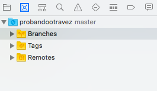
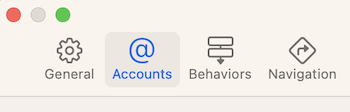
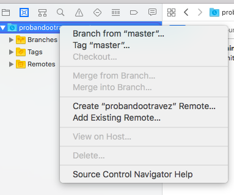
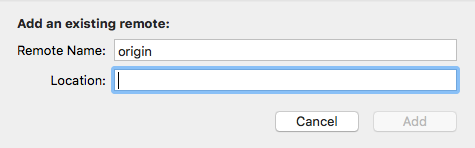
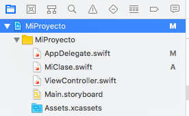

Control de versiones con Xcode¶
Crear un repositorio local para el proyecto¶
En este apartado veremos cómo trabajar con un repositorio git local. Tenemos dos opciones: crear el repositorio git local al crear el proyecto o añadirlo con posterioridad.
Para crear el repositorio git local al crear el proyecto: en la última pantalla del asistente (la misma donde se selecciona en qué carpeta guardar físicamente el proyecto) veremos una casilla de verificación que podemos marcar para crear un repositorio Git local (Create Git repository on my Mac)
Para crear el repositorio git local una vez creado el proyecto: en cualquier momento, vamos al menú de Source Control, opción Create git repositories.... Nos pedirá que marquemos para qué proyectos de los que tenemos abiertos queremos crear un repositorio git.
En los dos casos Xcode hará automáticamente un commit inicial del proyecto con el mensaje "initial commit" (recordad que cuando Xcode crea un proyecto iOS no está vacío sino que tiene algunos archivos, dependiendo de la plantilla elegida).
Podemos ver más información sobre el repositorio git con el Source Control Navigator, que es el segundo icono del panel de la izquierda de Xcode.

Trabajar con un repositorio remoto¶
Usaremos github en los ejemplos ya que es el servidor que empleamos en el curso, pero las instrucciones son prácticamente iguales para otros proveedores como Bitbucket o Gitlab.
Configurar la cuenta de nuestro proveedor¶
Lo más cómodo es guardar primero los datos de nuestra cuenta en Github, para no tener que introducirlos cada vez que hagamos una operación con el repositorio remoto. Para ello nos vamos a las prerencias de Xcode (Menú Xcode > Preferences..., o bien pulsar la tecla Command-, - cmd y una coma) y en la barra de herramientas seleccionamos la opción Accounts

Desde esta opción podemos gestionar nuestra cuenta de desarrollador de Apple y también cuentas de terceros como Github, Bitbucket, etc.
En la esquina inferior izquierda pulsamos sobre el + para añadir una cuenta y seleccionamos el tipo (en nuestro caso "Github"). Xcode nos pedirá que introduzcamos el usuario de Github y un personal access token, que sustituye a la contraseña de Github para autentificarse a través del API (Xcode usa el API de Github para interactuar con los repositorios)
Desde hace algún tiempo la autentificación en el API de Github mediante contraseña se puede usar todavía pero está deprecated. En su lugar hay que usar un token que se puede generar desde la página de Github. A partir del 13 de noviembre de 2020 se prevé que la contraseña deje de funcionar para autenticarse en herramientas de terceros (Por supuesto seguirá funcionando en la web de Guthub)
Vincular con el repositorio remoto¶
Repositorio remoto ya creado
Si ya hemos creado el repositorio git remoto, solo necesitamos saber su URL.
En Xcode, vamos al Source Control Navigator, (segundo icono del panel de la izquierda de Xcode), pulsamos con el botón derecho del ratón y en el menú contextual seleccionamos Add Existing Remote...

En el cuadro de diálogo que aparecerá colocamos la URL del repositorio remoto en el campo Location

Crear el repositorio remoto desde Xcode
Esta opción solo está disponible desde la versión 10 de Xcode.
En el Source Control Navigator, (segundo icono del panel de la izquierda de Xcode), pulsamos con el botón derecho del ratón y en el menú contextual seleccionamos Create (nombre del proyecto) Remote.... En el cuadro de diálogo que aparecerá podemos seleccionar la cuenta (en nuestro caso Github), el nombre que tendrá el repositorio, si va a ser público o privado, etc...
Xcode hará un push automáticamente tras crear el repositorio remoto
Trabajar con el control de versiones¶
Cuando el proyecto actual esté bajo el control de versiones verás que en el Project Navigator del panel de la izquierda (el modo por defecto de ver los archivos del proyecto) los archivos que se han añadido desde el último commit tienen una A a la derecha y los modificados una M.

Ten en cuenta que tras crear el proyecto, si has creado el repositorio local, Xcode hace automáticamente un commit inicial y por eso ningún archivo aparece inicialmente marcado con una
A, solo lo verás cuando crees archivos nuevos o modifiques los de la plantilla.
Las operaciones a realizar con el control de versiones están localizadas en el menú de Source Control. Las opciones más habituales son:
commit: aparecerá un cuadro de diálogo (bastante grande) con todos los archivos que han cambiado desde el último commit. Por defecto aparecerán seleccionados todos pero puedes seleccionar solo los que te interesen. En la parte inferior del cuadro de diálogo tendrás que escribir el mensaje asociado al commit.push: aparecerá un pequeño cuadro de diálogo en el que puedes elegir el repositorio remoto al que subir los cambios. Normalmente solo tendremos un remoto vinculado, de modo que bastará con pulsar sobrePushpull: igual a lo anterior pero será para traerse los cambios desde el repositorio remoto.Discard all changes: volverá a la versión local que teníamos en el último commit.